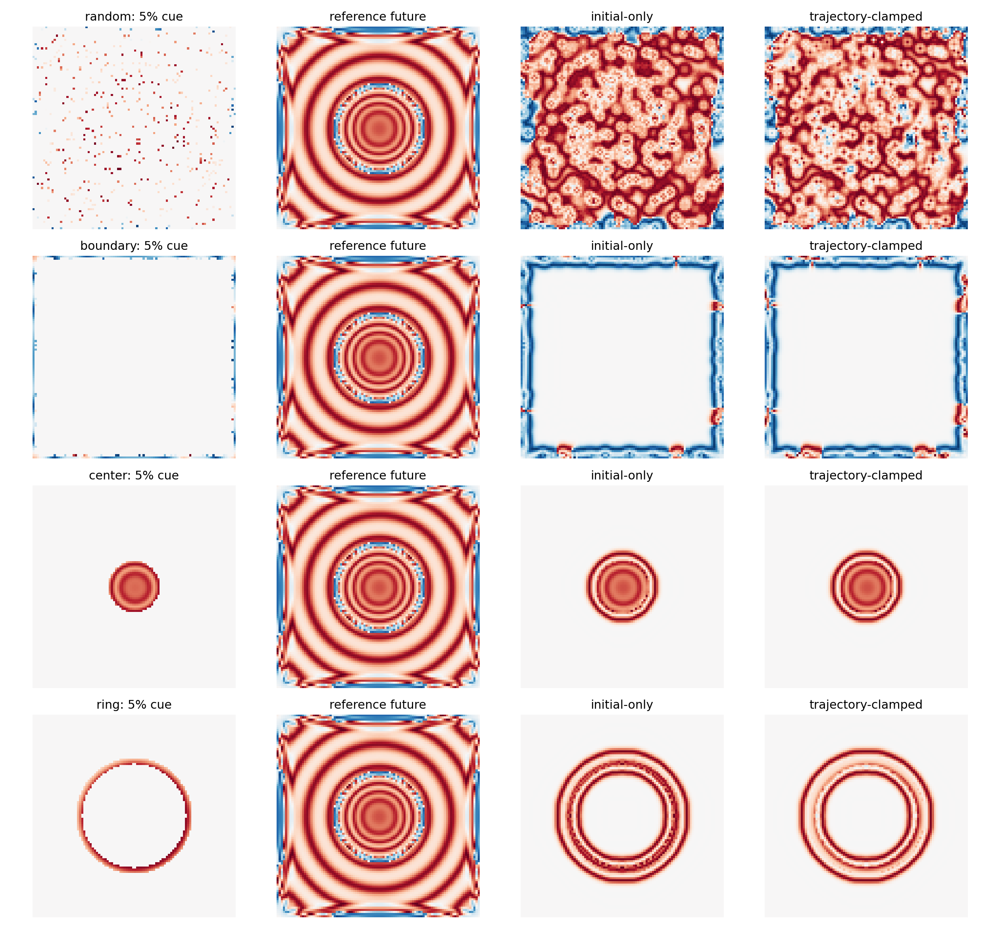
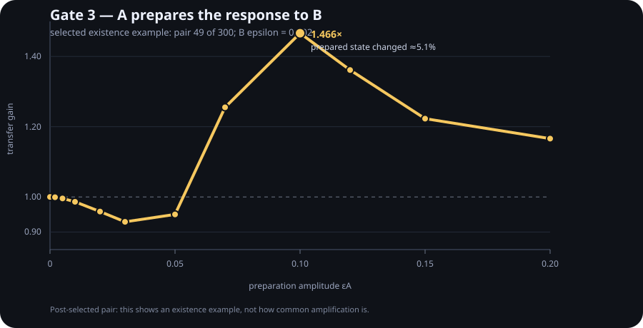

Compress the state.
Did you compress its response?
Kompressori began with an old partial-field / “hologram?” experiment. The more useful question turned out to be different: can a compressed state reproduce the visible future while becoming a different machine when the next perturbation arrives?

Gate 0 — same-looking future, different response
Future fidelity
Response fidelity
full state → future versus partial state → future, then repeat after the same tiny Gaussian displacement and compare the difference trajectories. Matching today's trajectory is not enough.
The field uses periodic boundaries. “edge” is only an observation-mask geometry, not a physical boundary.
Optimizing replay did not recover response geometry
A compressor selected because it reproduces known trajectories can leave the local future operator badly wrong.
Then we guarded the response. The guard learned the probes.
The obvious repair was to test perturbation responses during compression. Six train/test splits used four localized probes for selection and four different probes for evaluation.
Gate 2 failure is useful: at this 5% state-only budget, checking a few perturbations can itself be overfit. “I replayed the old answers” and even “I replayed a few local responses” are not the same as preserving the response geometry.
A finite perturbation can prepare the next perturbation
Packet A is applied, the field evolves for 20 steps, then a much smaller packet B is applied. We subtract the A-only future and ask whether B's response gain changed.

The selected pair first suppresses B, then flips into amplification as A becomes large enough to move the delayed state by a few percent. The 1.466× result is stable as B is shrunk across a 16× amplitude range, which is evidence that B itself remains in a tangent-like probe regime.
Pair 49 was selected as the maximum-gain example among 300 pairs. This is an existence example, not a prevalence estimate, not fluid blowup, and not a brain claim. Most tested pairs remained very close to gain 1.
Where this now points
G4 map A location × delay × B location instead of post-selecting one pair.
G5 compare state-only compression with a small tangent / impulse sketch.
G6 let response geometry change slowly and test when local transfer becomes runaway amplification.
G7 move the same distinction into learning: preserve stored answers versus preserve nearby response geometry.